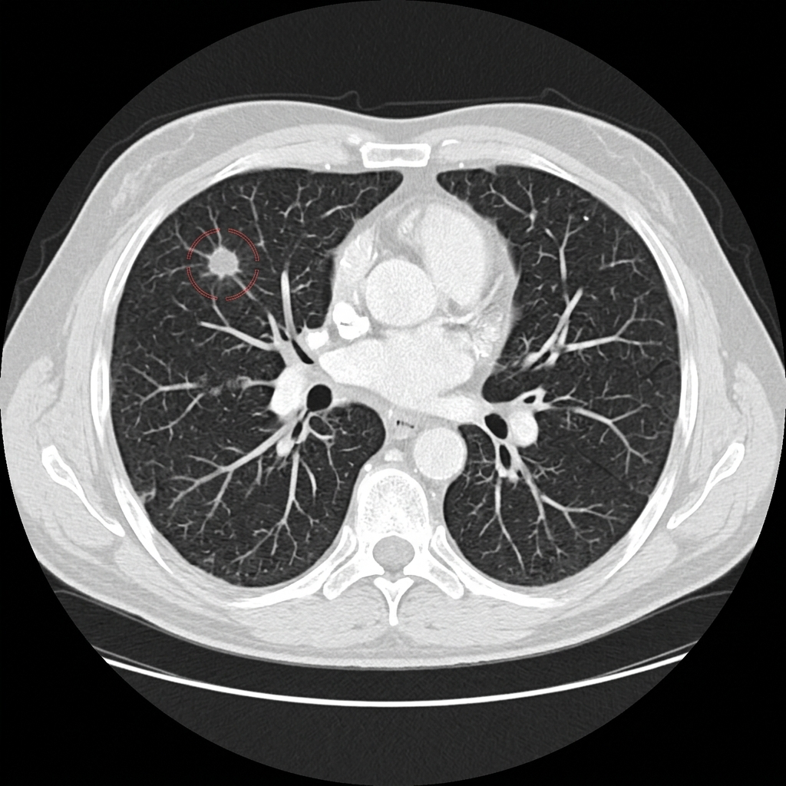
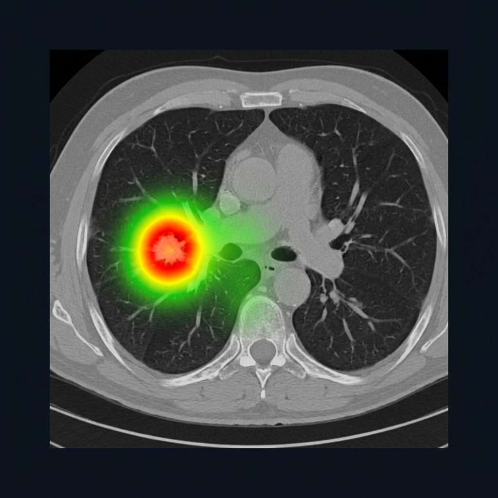

Clinical Dashboard Live
Real-time hospital intelligence & AI performance metrics
Upload Center DICOM Ready
Drag and drop medical images for AI-powered analysis

AI Analysis Pipeline 13 Stages
End-to-end automated clinical workflow from ingestion to report
Medical Image Viewer DICOM
Professional-grade viewer with AI overlay and measurement tools
AI Diagnostic Results Critical
Automated analysis findings with clinical grading
Explainable AI Grad-CAM
Interpretable visualizations explaining AI diagnostic decisions

Risk Prediction
AI-computed risk assessment with animated clinical gauges
Doctor Copilot AI Assistant
AI-powered clinical reasoning assistant with citation-backed answers
Clinical Report Generator
Automated HIPAA-compliant structured diagnostic reports
AI-Assisted Diagnostic Report
Patient Information
| Patient ID | PAT-2026-04182 |
| Name | Ramesh Sundaram |
| Age / Gender | 58 years / Male |
| Referring Physician | Dr. Anitha Krishnan |
Imaging Summary
| Modality | CT Chest with Contrast |
| Scanner | Siemens SOMATOM Force (128-slice) |
| Slice Thickness | 1.0 mm |
| Study Date | July 23, 2026 |
AI Findings
A 12.4 mm part-solid ground-glass nodule is identified in the posterior segment of the right upper lobe. The nodule demonstrates irregular margins with a solid component measuring approximately 6mm. No calcification is present.
AI Confidence: 94.7% | Model: Vision Transformer (ViT-L/16)
Risk Assessment
Malignancy risk: 87.3% — High
Recurrence risk: 42% — Moderate
Clinical Impression
Suspicious pulmonary nodule in the right upper lobe, highly suggestive of early-stage adenocarcinoma. Recommend PET-CT for metabolic characterization and CT-guided biopsy for histological confirmation. Multidisciplinary tumor board referral is advised.
Recommendations
1. PET-CT within 1 week
2. CT-guided percutaneous biopsy
3. Pulmonary function tests
4. Tumor board review
Doctor Notes
Reviewed and concur with AI findings. Patient counseled regarding biopsy. Follow-up appointment scheduled for August 2, 2026. — Dr. Rajesh Kumar, MD, FRCR
Patient Timeline
Longitudinal patient history with scan comparison
Hospital Analytics 2026
Interactive performance dashboards and model evaluation metrics
Multi-Modal AI Engine
Specialized AI models for every imaging modality
Technology Stack
Enterprise-grade infrastructure powering AMAP